Sketching and Research
All of Earth Original Design’s solutions are well developed across hours of sketching and refinements made through market research, as well as lateral exploration which is a process that involves reading and investigating similar but unconnected disciplines, relating to the form, interactive experience or function.
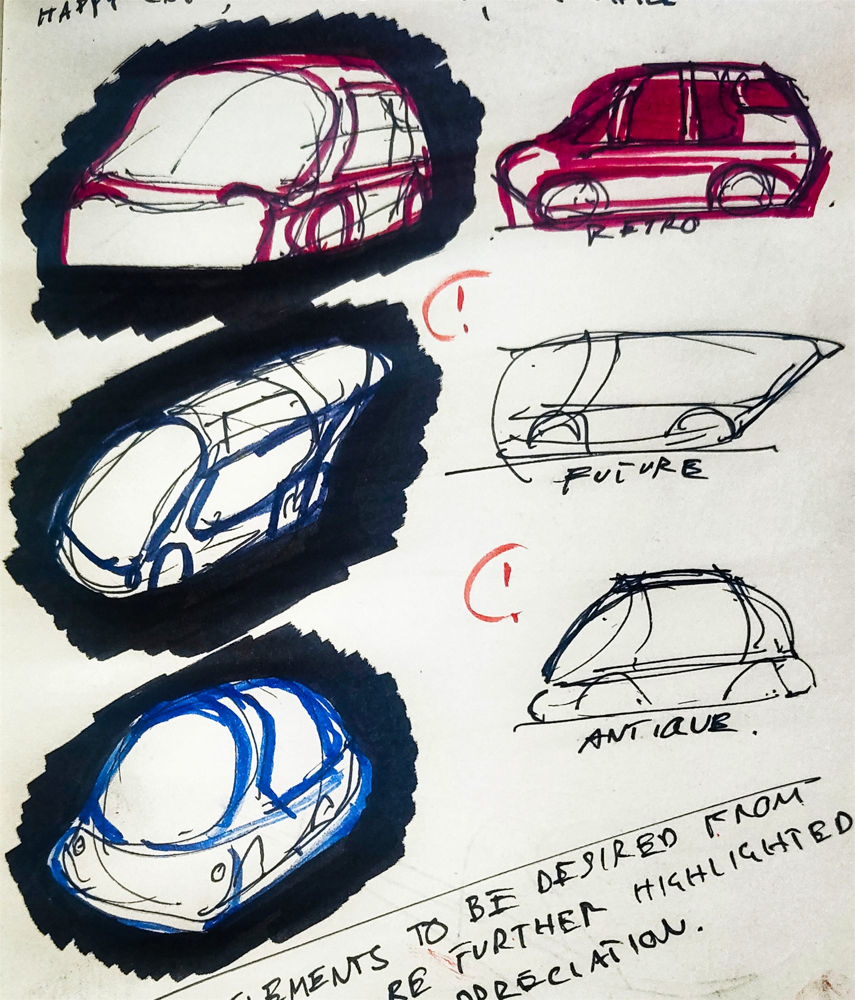
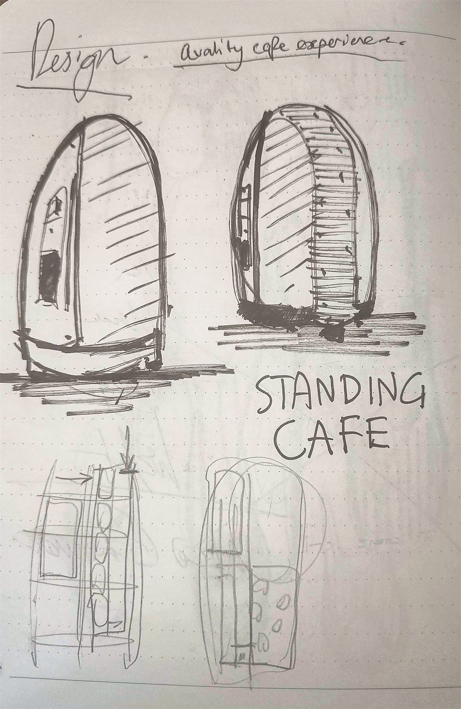
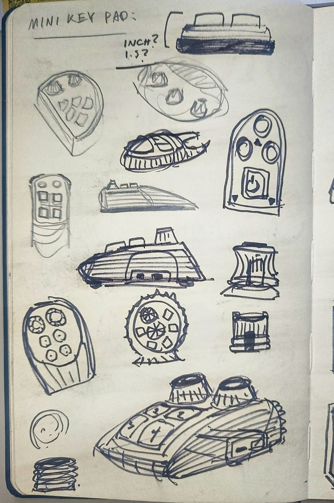
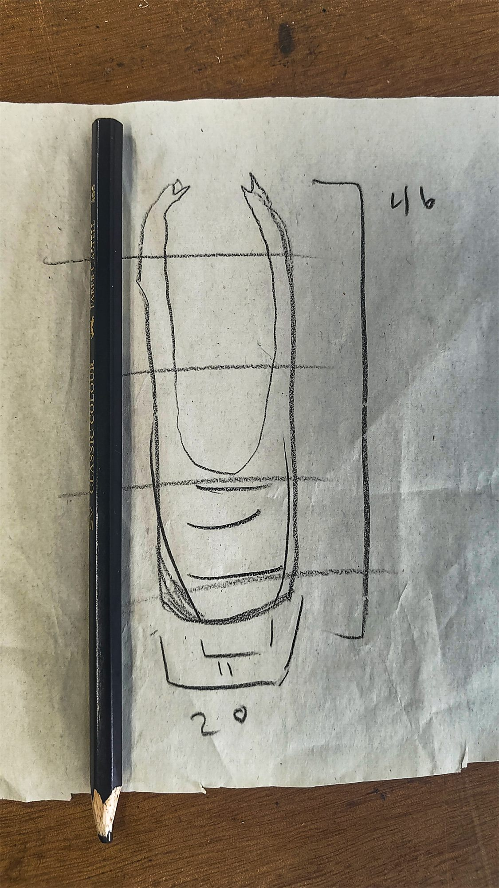
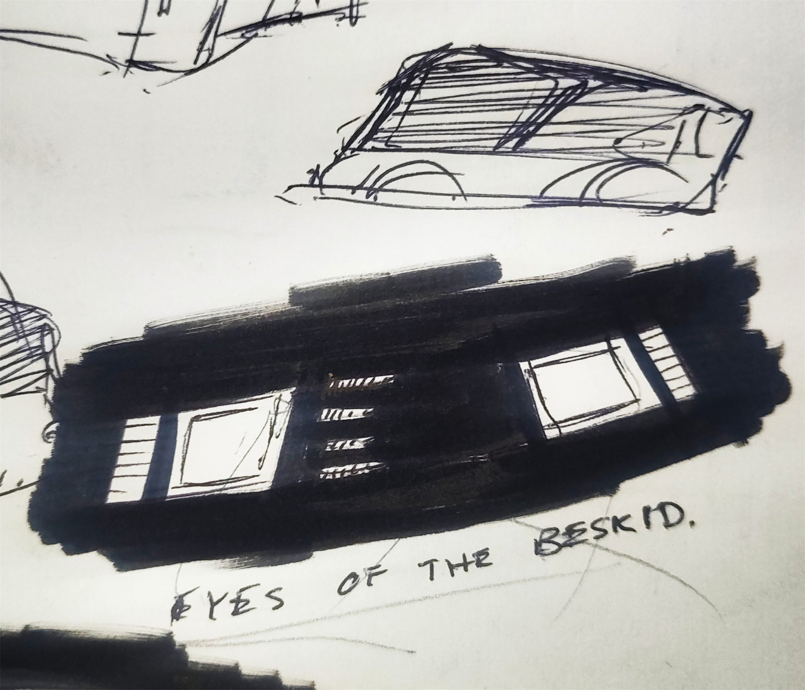
Modelling and Rendering
Many of the designs are developed in Autodesk Fusion, Photoshop or Blender before anything is made. This allows more efficient scheduling in the development process, and results in early rendering and visualizations of the final design without wasting material.
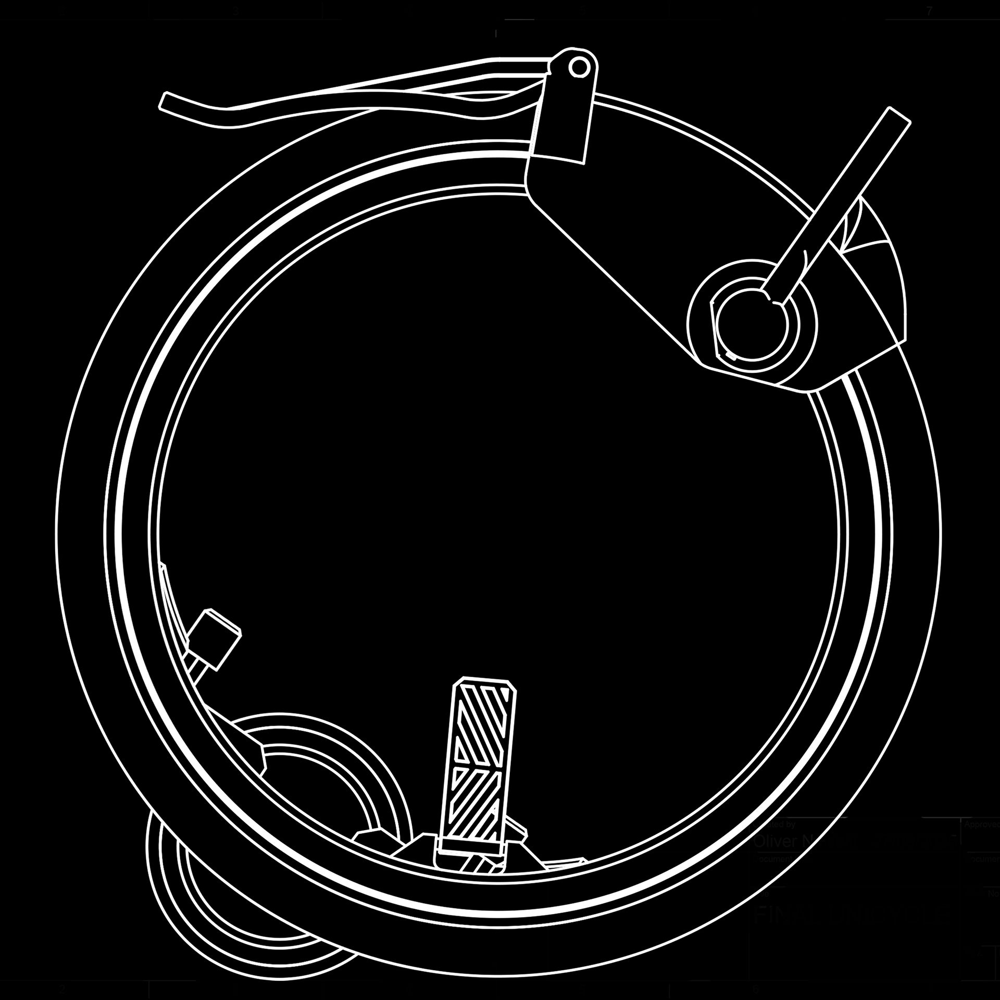
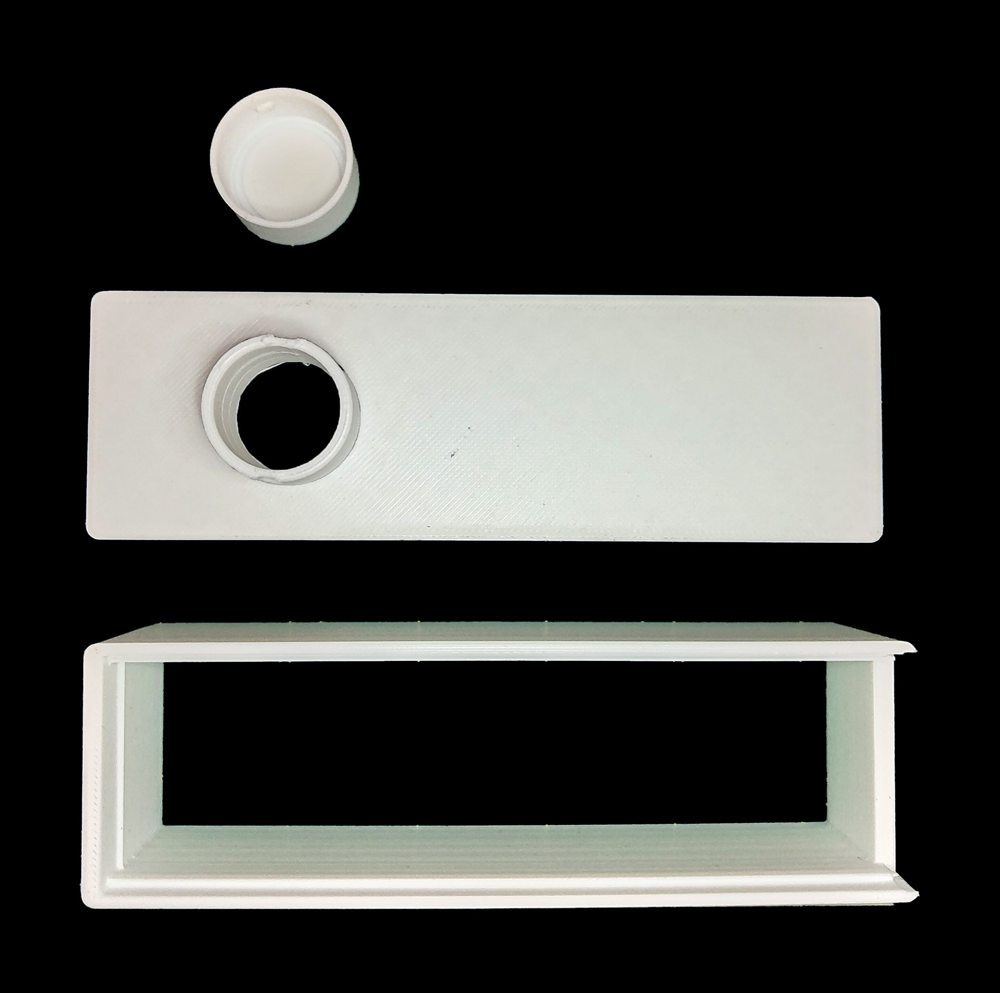
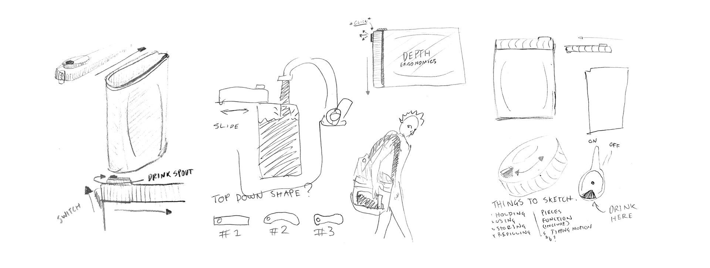
Prototyping
Includes the use of laser cutting, 3D printing, bandsaw work and cold-working glass components in order to test the real materials.
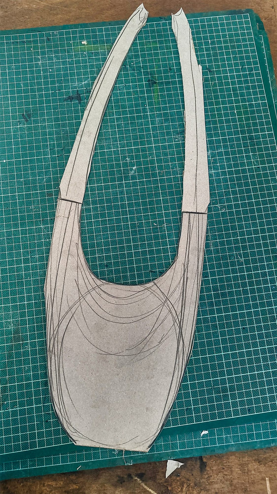
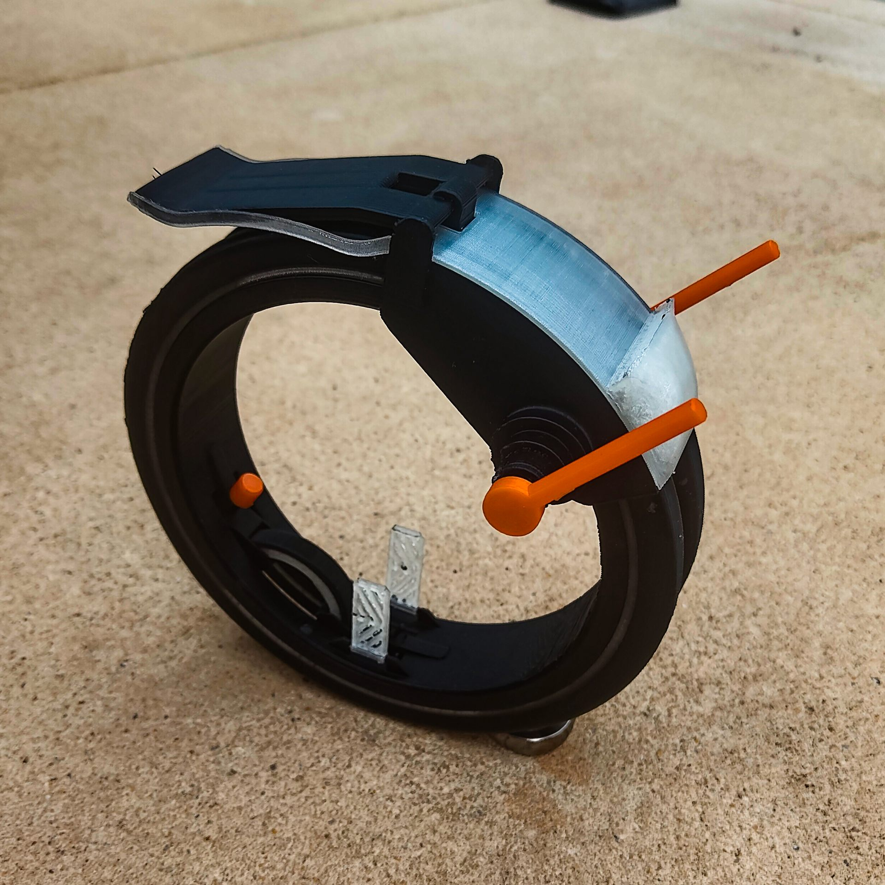
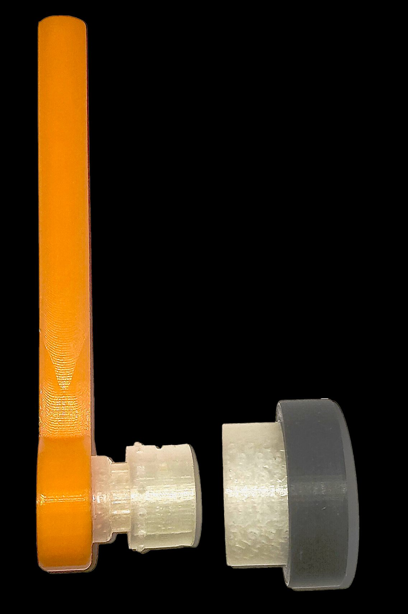
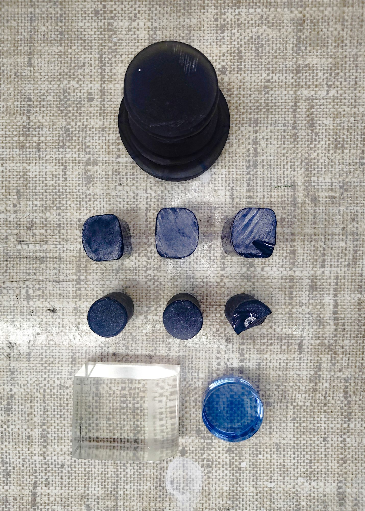
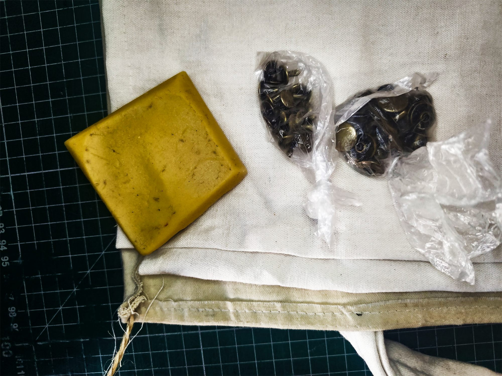
Production
For the larger, official continuation of Earth Original Design’s products, planned partnerships and collaborative efforts are being developed for external laser cutting and CNC machining services.